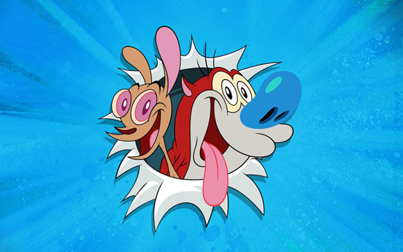
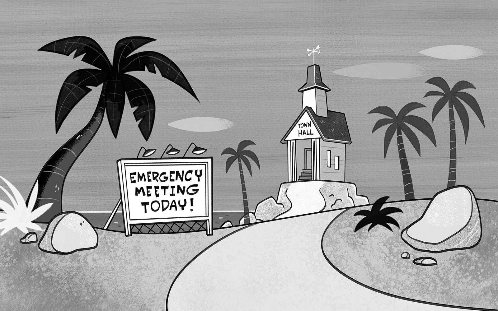
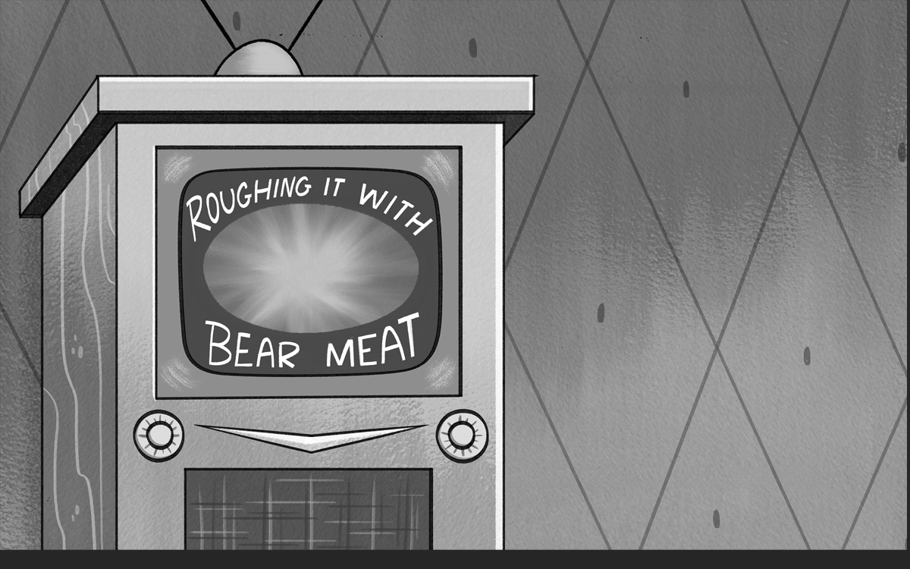

Ren & Stimpy

My work on the 2024 Ren & Stimpy revival for Paramount+ involved both the Layout and Paint departments. As part of the layout team from January to October 2023, I translated storyboards into production-ready scene setups, establishing character staging, perspective, proportions, camera composition, and environmental continuity. This included preparing backgrounds and foreground elements, refining character placement and posing, and ensuring scenes were technically and visually ready for animation. I subsequently transitioned into the Paint department, working under Mark Whiting to contribute to the show's distinctive colour styling and finished artwork. The production required careful attention to the original series' exaggerated visual language, maintaining the expressive character designs, unconventional proportions, and strong graphic sensibility that define the property.




Contributed to the visual development of Ren & Stimpy through the creation of detailed black-and-white scene layouts, translating storyboards into fully constructed environments and animation-ready compositions. This involved refining character staging, perspective, camera angles, and environmental details while ensuring strong visual continuity, accurate proportions, and the exaggerated drawing style that defines the series.

Case Study
Specialized in the background paint process, developing and finishing detailed colour artwork for animated environments, translating established layouts and visual direction into polished production backgrounds. This involved applying colour, shading, lighting, and atmospheric treatments while maintaining consistency across locations, scenes, and sequences. Worked with established colour palettes and stylistic references to ensure backgrounds complemented character designs, supported visual storytelling, and maintained the overall aesthetic of the production. Particular attention was given to colour harmony, depth, perspective, and environmental detail, ensuring each background integrated seamlessly into the finished animation.


Despite substantial production work being completed, the series was ultimately shelved before reaching its intended release on Paramount+. While its distribution plans were put on hold, the project remains a completed body of production work with the potential to find a new distribution opportunity in the near future. Its eventual release remains uncertain, but there is still the possibility that the series will reach audiences through an alternative platform or future distribution arrangement.